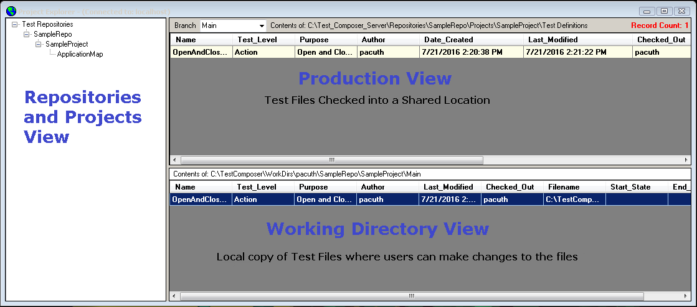
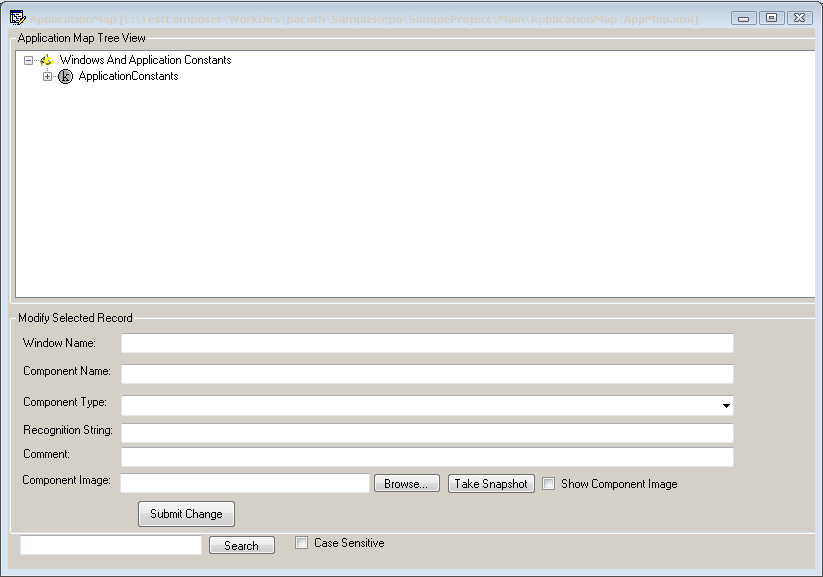
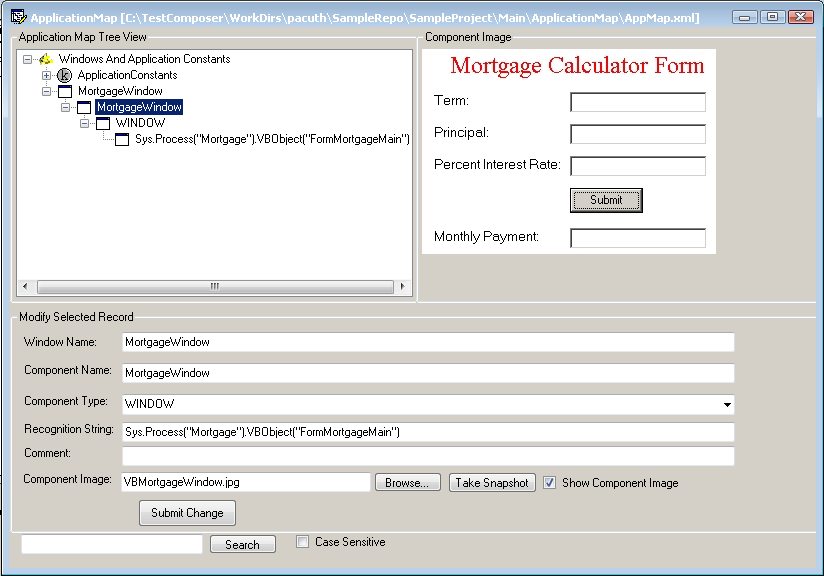
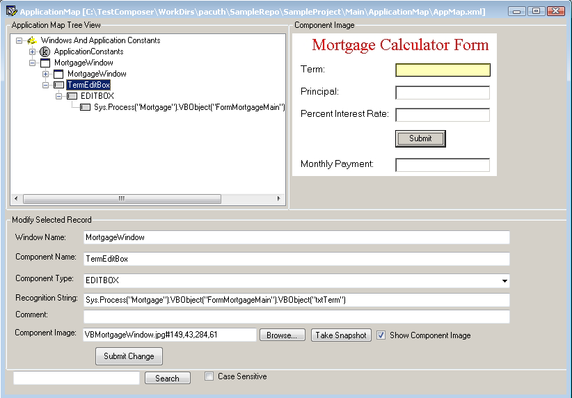
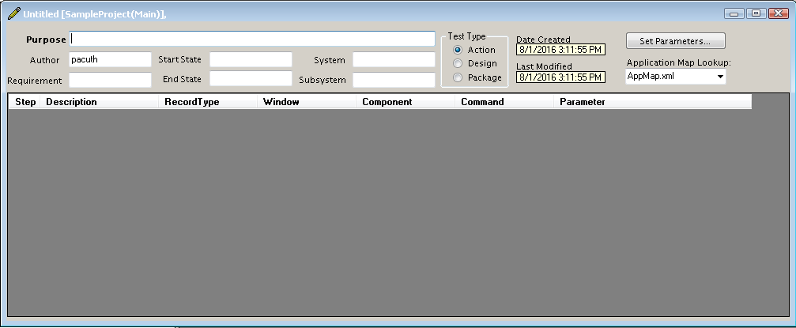

Before beginning this section, ensure you have Test Composer installed and configured properly before proceeding. Please refer to the TCREADME.html document for details.
Test Composer Getting Started
Launch Test Composer by executing TestComposer.exe from it's install location. Test Composer uses a multiple document interface design. That is, a main window for the application launches with a toolbar and menus. All Test Composer documents are opened within the main application window. (The only exception would be the Application Map editor, which can be opened within or outside the main application window).
The Project Explorer window should open by default when the application launches. (If it doesn't, the project explorer window can be opened by selecting the View->Project Explorer... from menu pulldown)
Project Explorer Layout

Creating a Repository
A repository is a location where users can create and group common projects together. All projects within Test Composer exists in a repository. To create a Repository, do the following:
- In the Repository and Projects View in the project explorer, right-click to display menu selections. Select "Add Repository..."
- On the "Add a Repository" dialog, enter a Repository Name, Description (optional), and Owner. Note: Repository names are limited to 50 characters in length.
- A "New Repository Created Successfully" dialog should appear. Select Ok.
- The Repository and Projects tree view should automatically refresh and now show your newly created repository.
Creating a Project
A project is a location where users create, store, and execute test cases for the application being tested. To create a project, do the following:
- Select a Repository from the Repository and Projects tree view, right-click to display menu selections. Select "Add Project...".
- On the "Add a Project" dialog, enter a Project Name and Description (optional). Select OK. Note: Project names are limited to 100 characters in length.
- The Repository and Projects tree view should automatically refresh and now show your newly created project.
What is an Application Map?
An Application map is a place to define aliases for windows and components on those windows in the application under test.
The user also declares how those windows and components are recognized by the automation tool (via a Recognition String).
In additional, the Application Map is also a place to store constant values that a project may need. For example, "userid" may
be defined with a value equaled to "tester". Therefore a test can reference "userid" without having to set its value.
In addition, if "userid" needs to be changed, only the Application Map needs updating and not every test that uses it.
Editing the Project's Application Map
The project's Application Map exists in "ApplicationMap" folder underneath your project in the Project Explorer.
The production view of the project explorer should contain a default Application Map (AppMap.xml) already created and checked in.
To use that map, select the Application Map (AppMap.xml) row, right-click, select "Edit" menu item. This will check out the Application Map into your working
directory and open up the "Application Map Editor" so you can begin making edits. Note: You can create additional Application Maps for
a project if needed. To create a new map, select "New" from the File menu pulldown while the ApplicationMap folder is selected in the
Project Explorer. A new Application Map editor will open.

Adding an Application Constant
In Test Composer, a user can define constants and their value in the Application Map. Constant values are global in nature and can be read/retrieved by all test cases.
All project constants are stored under ApplicationConstants window in the map editor.
- To add a constant, highlight "ApplicationConstants" in the tree view. This will prefill the Window Name as "ApplicationConstants".
- Enter the constant name in the "Component Name" field.
- Component Type: Constant
- Recognition String: Enter the constant value
- Comment - describe what the constant is used for (optional).
- Component Image - not applicable for constants.
- Select the "Submit Change" button
The newly defined contant will be added underneath the ApplicationConstants window in the tree view. Repeat process to add additional project constants.
Adding Windows and Components
Before you can assign any automated command/task to a window or component in your test case, they first must be defined in the Application Map.
Note: after a window and component has been defined in the application map, they will become available as pulldown selections in the "Window" and "Component" columns in a test case.
You start first by defining a Window in the Application Map:
- Window Name: Enter the name of the window. This is user defined.
- Component Name: Enter the name of the window. Since the window itself is the component, they share the same name.
- Component Type: Window
- Recognition String: Enter the string on how the automation tools will recognize this window component. (Optional at design time)
- Comment - describe what the window is used for (optional).
- Component Image - You may take a snapshot of the window to store along side the map entry (optional). This helps other users know exactly which window is being defined by having a visual picture of it.
- Select the "Submit Change" button
Note: You may add Windows and Components to the Application Map without having to enter a Recognition String. This allows the user to define and build tests without having a working application or worrying about recognition strings.
A valid recognition string will only be needed at test execution time.
The newly defined Window will be added to tree view. Here is an example of defining a window for an application:

Now it's time to define the components that exists on this window.
- Window Name: Enter the name of the window. In the example, we called it MortgageWindow.
- Component Name: Enter the name of the component. Let's define the term editbox in the example. We will call it TermEditBox.
- Component Type: Select component type from the combobox pulldown. Example, select EditBox
- Recognition String: Enter the string on how the automation tools will recognize this component. Example: Sys.Process("Mortgage").VBObject("FormMortgageMain").VBObject("txtTerm")
- Comment - describe what the component is used for (optional).
- Component Image - You may take a snapshot of the component to store along side the map entry (optional). This helps other users know exactly which component on the window that is being defined by having a visual picture of it.
In cases of components, it's better to show the entry window and then hightlight the component that is being defined. To do this, use the window image and then with the image being shown, use your mouse (with left button pressed)
to highlight the component.
- Select the "Submit Change" button
The newly defined component should be added underneath the window in the tree view. The example would look like this:

Repeat the defining process for all the components on the window.
Creating a Test Case
A test case consists of a series of steps used to verify a specific requirement and/or accomplish a specific automated task.
There are 3 types of test cases that can be created: Packages, Designs, and Actions.
Package - A test case used to group related tests together. For example, you may wish to group and execute all tests about a specific function together. Packages can execute designs or other test packages.
Design - A test that consist of a series of steps to verify and validate specific requirements. Test designs should not contain any GUI specifics on how to accomplish the verification. We are focused only on the requirement that needs to be verified and validated at this level. Test designs can call other test designs and/or test actions.
Action - A test that consist of a series of steps that are needed to be performed in the application to accomplish a specific automated task. Tests of this type can be GUI specific. Test actions can call other test actions.
By having these 3 test types, Test Composer encourages a top down approach to testing. When tests are organized in this manner, they become easier to maintained. If a requirement changes, only the test design would need to be updated. If the application gui changes, but the requirement stays the same, then only the test action would need to be updated.
Note: labeling test cases by type is only used for organizational purposes and does not have any impact on how a test case is executed.
To create a new test case, select the project in the Repository and Projects treeview in the project explorer. Select File->New from the main application menu pulldown or right-click in the working directory view and select "New" from the menu.
This should open up a new test case dialog window as follows:

Test Case General Information fields
Purpose - Enter the purpose or description of the test case
Author - Enter author or userid of the test case. Default is windows userid.
Requirement - Enter a requirement indentifier. This indentifier is a label the user selects to represent a specific requirement.
Start State - Enter a start state indentifier. This indentifier is a label that represents a specific state of the application before test begins. This label is user defined. (Optional)
End State - Enter an end state indentifier. This indentifier is a label that represents a specific state of the application at test has completed execution. This label is user defined. (Optional)
System - Enter the system identifier the test case is verifying and/or validating. This label is user defined. (Optional)
Subsystem - Enter the subsystem indentifer the test case is verifying and/or validating. (Optional)
Test Type - Radio button selection to determine the test type. Test types are described above. Default is Action.
Date Created - The date the test case was initially created.
Last Modified - The date the last time the test case was saved.
Set Parameters - Selecting this pushbutton will open up the Parameters dialog to allow you to enter the parameters for the test case (if any)
Application Map Lookup - The lookup values for available windows and components in a test step are determined by Application Map that is set for this field.
Adding Steps to a Test
- In the step table, right-click to display menu pulldown. Select "Add Step..."
- A row will be added to the table, with the cursor in the Description column. Enter a Description for the step.
- Select a Record Type for the step from the combobox pulldown. Record Types are as follows:
- Action - call another test case of type Action. (option available in pulldown if test case is of type Design or Action)
- Design - call another test case of type Design. (option available in pulldown if test case is of type Package or Design)
- Package - call another test case of type Package (option available in pulldown if test case is of type Package)
- Block - assigning the step as a block. Commands available for this type is Block. The parameter value will assign name to the block.
- BreakPoint
- Comment - Step used for commenting purposes only.
- Component Functions - Step is used to perform an automated task on a specific window and component in the application.
- Driver Command - A step used to call one of the SAFS driver commands
- External Action - call another test case of type Action from a different project. (option available in pulldown if test case is of type Design or Action)
- External Design - call another test case type Design from a different project. (option available in pulldown if test case is of type Package or Design)
- External Package - call another test case of type Package from a different project. (option available in pulldown if test case is of type Package)
Note: You can change the external call location by selecting the step row and hitting the F2 key. This will bring up the External Test Dialog allowing you to modify the location of the external project.
- For additional information about SAFS record types Click Here
- The Window and Component Columns are only needed if Record Type of "Component Function" is selected. If "Component Function"
is selected, then the Window pulldown will display all windows that exist in the
Application Map (Map set in Application Map Lookup). After a window has been selected, then all the components on that
window will be will displayed in the Component column pulldown. After a component is selected, the all available commands available for that
particular component will be displayed in the Command column pulldown. So, only that commands that can be performed on that component
type will be displayed to the user.
- Select a Command from the command pulldown. After a command is selected, any Parameters that command may have is displayed in the Parameter column.
- Fill out any parameters that are required by the command. Note: F1 key may be selected to get help on the command and parameters values.
In order to reference a constant value that is defined in the application map, use "^" in front of the constant name. You may think of "^" as meaning "the value of".
For example, if "MyAppPath" was defined as a constant in the application map and you need to assign a parameter called "ExecutablePath" to that value, then your parameter assignment would look like this: ExecutablePath=^MyAppPath ExecutablePath is assigned the value of MyAppPath.
Executing a Test Case
There are several ways to execute a test case from within Test Composer.
- 1. A test case case can be executed from either the production view or the from the working directory view.
Select the test case row you wish to execute and right-click to display menu. Select "Execute Test" from the menu pulldown. If this is
the first time you have attempted to execute a test from a project, a prompt will be displayed "WARNING: The Automation Project for YourProject does not exist. Do you wish to create?".
After selecting "Yes", the directories and files needed for execution will be created in the Root Directory for Automation Project/YourProject folder. Then the test case will proceed to
execute by running the script that was assigned on your "Setting Configuration" screen (Admin->Configure menu).
- 2. You can also open your test case and select the rows you wish to execute. Hightlight each you wish to execute (hold shift key to hightlight multiple consecutive rows or hold control key
to select each row manually. Then right-click to display menu, Select Execute->Selected Steps. You can also execute all steps in the test case by selecting the Execute->All Steps menu item.
- 3. Lastly, you can execute test cases from the command line. Open a Windows command prompt and change directory to the Test Composer installation directory. To execute a test case from a specific project and branch, use the following
format: Testcomposer -t MyTest -r MyRepo -p MyProject -b MyBranch
To a list of all command line commands, use TestComposer -help.
Please note: Test execution will based on the configuration settings (Select menu Admin->Configure to see details).
A default bat file will execute based on the Test Execution radio button that is selected. You may view this file
by opening up the bat file in the [Root Directory for the Automation Project]/[Project] folder. The bat file will set an .INI
file which configures SAFS. For more information about configuring SAFS options, click here
Learn more about SAFS engines and setup
SAFS Class References
Information on using Debug log
A Quick Start Project
Projects can be exported and imported into Test Composer. A quick start project has been included with the installation.
To import this project, use the following instructions:
- 1. Open Test Composer with the Project Explorer opened.
- 2. In the Repositories and Projects View in the Project explorer, right-click to display menu. Select "Import Project from SQL file..."
- 3. On the Open dialog, change directory to the Test Composer installation directory. Select "SampleProject.sql" file.
- 4. An "Import Completed!" dialog should appear. The Repositories and Projects View in the Project Explorer should now contain "SampleRepo" with the project "SampleProject".
- 5. The SampleProject should contain one test case. This test case simply opens notepad on the users machine and then closes the window. To try, select the test case in the Production View, right-click,
and then select the "Execute Test"